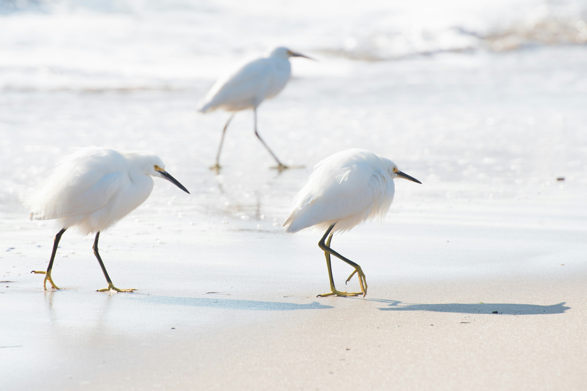
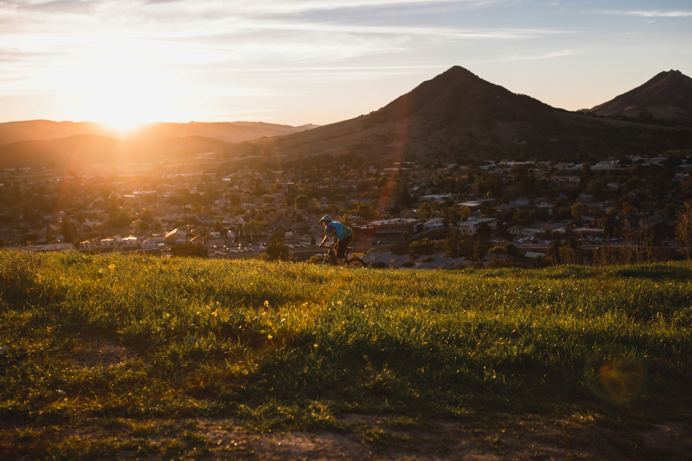
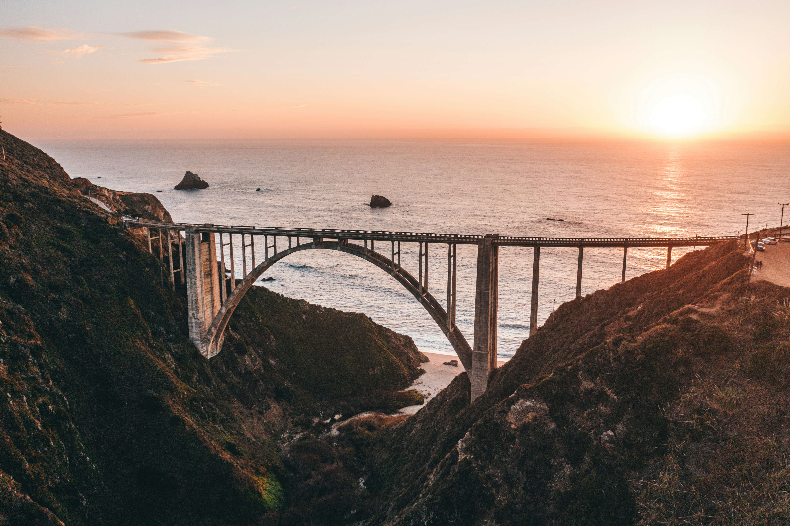
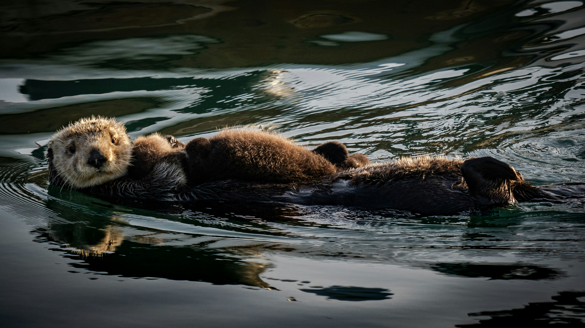
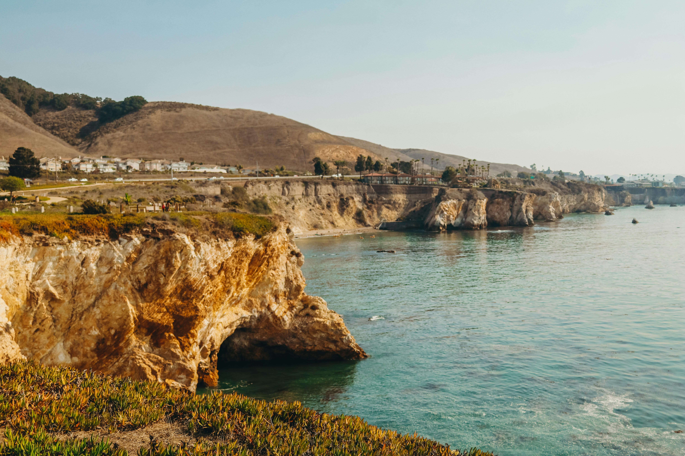
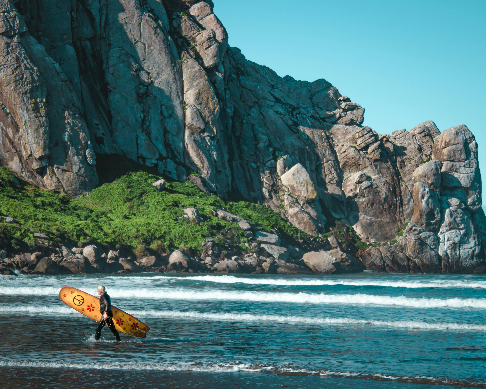

Travel
Food
Stories
Culture
About Us
Photo Gallery
Subscribe

Photo by Irina Blok

Photo by Luke Bender

Photo by Spencer Davis
Photo by Austin Schmid

Photo by Anchor Lee

Photo by Kelsey Knight
Photo by Gabriel Tovar

Photo by Alex Samuels